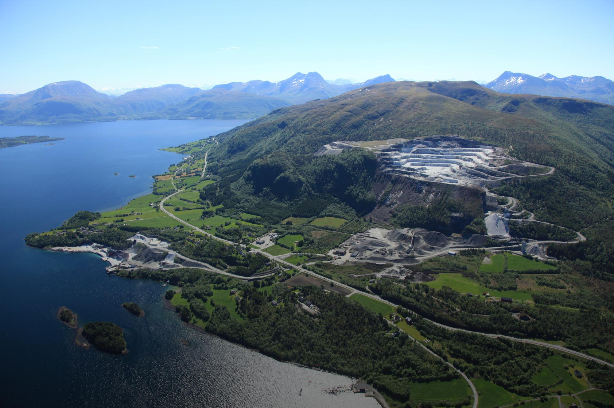
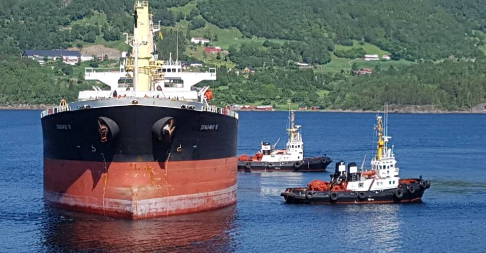

VISNES KALK · SIDEN 1904
Marmor og eklogitt
fra Visnes Kalk.
Råvarer til jordbruk, vannverk,
bygg og industri.
Dagbrudd og kaianlegg ved VisnesVisnes, Lyngstad
01
ProdukterFinn materiale og gradering
02DokumentasjonProduktdatablad, HMS og sertifikater
03LeveringHavn og transport
PRODUKTER
Velg bruksområde
Se produkter, graderinger og dokumentasjon
for ditt bruksområde.
DOKUMENTASJON
Datablad og
sertifikater
Søk etter produktdatablad, sikkerhetsdatablad og sertifikater i dokumentbanken.
Åpne dokumentbanken
UTSKIPING FRA VISNESVISNES KALK
Industri på Visnes
siden 1904.
Historien startet med uttak av marmor i 1904. I dag går leveransene fra Visnes til kunder i Norge, Europa og Asia.
Dagbrudd, foredling og utskiping er samlet på Visnes.
Bli kjent med VisnesKONTAKT
Spør oss om produkter og levering
Kontakt oss om produktvalg, ønsket gradering og levering.